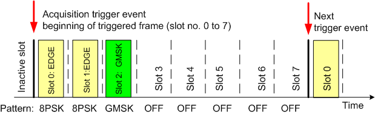
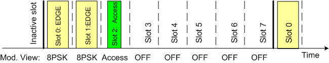
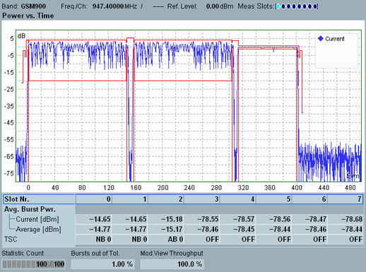

Capturing a particular burst sequence requires two steps:
The R&S CMW determines the frame structure of the measured signal (slot nos. 0 to 7), most conveniently using a gap or pattern trigger (see "Detecting GSM Multislot Frames").
Within this step, the GSM multi-evaluation measurement has aligned to the frame. The measurement continues irrespective of the actual burst pattern in the measured frames.
Use the modulation view settings to filter frames with a definite burst pattern, rejecting all other frames.
The acquisition trigger and modulation view settings are independent of each other. It is possible to specify the same burst pattern for the pattern trigger and the modulation view. It is also possible to use different settings, e.g. to pin down the frame boundary using the predominant burst pattern and then measure a different, occasionally transmitted burst pattern. |
The mobile transmits two 8PSK-modulated EDGE bursts in slots 0 and 1, followed by a GMSK-modulated burst in slot 2. Suppose that the GMSK-modulated burst is occasionally replaced by an access burst.
To detect the frame boundary and measure the access burst frames, proceed as follows:
Feed the GSM uplink signal to the input connector. Perform the necessary analyzer settings. See "Measuring an UL GSM Signal".
Open the "GSM Measurement – Multi Evaluation Configuration" dialog.
Select "Trigger > Trigger Source: Acquisition (Internal)", "Trigger > Acquisition > Mode: Pattern", "Trigger > Acquisition > Pattern: 8PSK 8PSK GMSK OFF OFF OFF OFF OFF".

Activate the access burst search: "Measurement Control > Access Burst Search: On".
Select "Measurement Control > Modulation View > Setting: 8PSK 8PSK Access OFF OFF OFF OFF OFF".

Start the GSM multi-evaluation measurement . Observe the triggered frames in the power vs. time diagram.

The "Modulation View Throughput" result across the bottom of the diagram denotes the number of captured frames which fulfilled the modulation view conditions (matching frames). In the example above, about 1/4 of the frames were matching frames. The remaining frames were not considered for the measurement. Depending on the periodicity of the matching frames and the duration of the measurement intervals, the modulation view throughput can vary around the expected value. |